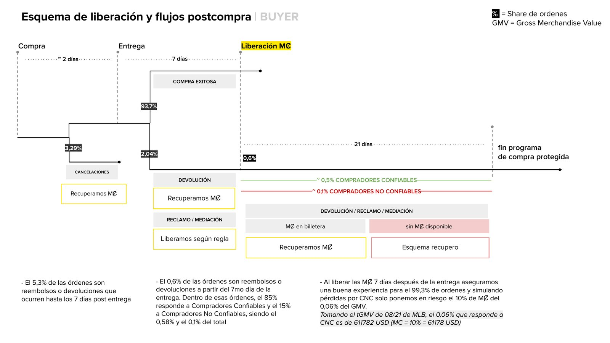

Definición de producto: MercadoCoins
¿Qué pasa con una recompensa cuando la compra que la generó se cancela, se devuelve o termina en reclamo? Una decisión de producto con impacto en la experiencia y en el negocio.

El desafío
Las MercadoCoins (MȻ) son las criptomonedas de Mercado Libre, otorgadas como beneficio a los compradores en ciertas transacciones. Como parte del equipo de Postcompra, asumí el rol de Producto para definir su comportamiento en los flujos de cancelación, devolución y reclamo.
La idea inicial era recuperar las MȻ en casi todos los flujos. Pero, ¿qué hacemos cuando el usuario ya no las tiene?
El análisis
Analizamos la distribución de flujos, los tiempos, el NPS y los motivos de cada camino de postcompra para entender dónde estaba el riesgo real.
Compras exitosas
No requieren ninguna acción sobre las MȻ.
Reembolsos o devoluciones
Ocurren hasta 7 días después de la entrega.
Después del día 7
El 85% corresponde a compradores confiables.
La primera propuesta
Liberar las MȻ 7 días después de la entrega.
Con esa regla evitábamos el problema en el 99,3% de las órdenes, y la simulación de pérdidas mostraba que solo poníamos en riesgo el 0,06% del GMV. En números, la propuesta cerraba.
Cambiar de posición
Al discutirlo con otros equipos de producto, entendimos que no era la mejor experiencia para el usuario en cuanto al beneficio: una recompensa que llega una semana después pierde gran parte de su valor.
La solución final fue entregar las coins en el momento de la compra, y diseñar otras acciones para mitigar riesgos en todos los flujos de postcompra.
Resultados
Lo que me llevo
Los datos no deciden solos
La regla de los 7 días era sólida en números, pero la experiencia del beneficio pesaba más.
Cambiar de posición también es criterio
Escuchar a otros equipos nos llevó a una solución mejor que la nuestra.
Pensar en sistema
El riesgo no se resolvía en un flujo: había que cuidar toda la postcompra.